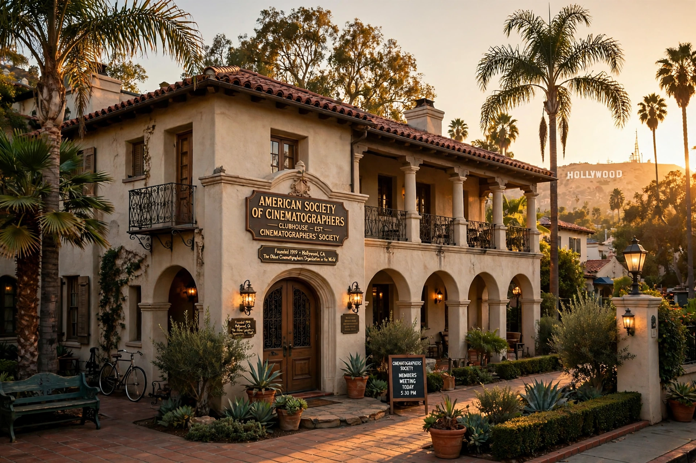

| American Society of Cinematographers | |
| Founded | January 8, 1919 |
|---|---|
| Headquarters | Hollywood, Los Angeles, California |
| Type | Professional honorary society |
| Publication | American Cinematographer |

The American Society of Cinematographers (ASC) is a professional organization of cinematographers founded in Hollywood in 1919. It is neither a labor union nor a guild but an honorary society: membership is by invitation only, based on a cinematographer's body of work, and members may append the letters "A.S.C." after their names.
The ASC was formed on January 8, 1919, through the merger of two earlier camera clubs, the Cinema Camera Club of New York and the Static Club of Los Angeles, with fifteen charter members including first president Phil Rosen. Its stated purposes were to advance the art and science of cinematography, foster loyalty and professional exchange among cameramen, and raise the craft's standing within the industry. In 1920 the society began publishing American Cinematographer magazine, which remains the leading technical journal of the field.
Since 1936–37 the society has been headquartered in a Spanish Colonial clubhouse in Hollywood, originally built in 1903, which houses a small museum of historic cameras. The ASC presents the annual ASC Awards, honoring outstanding cinematography in theatrical features, television, and student films, as well as lifetime achievement honors.
Sister societies modeled on the ASC exist worldwide, including the British Society of Cinematographers (BSC), the French AFC, and the Italian AIC. Members such as Karl Freund, Gregg Toland, and Gordon Willis shaped the visual language of classical and modern cinema.